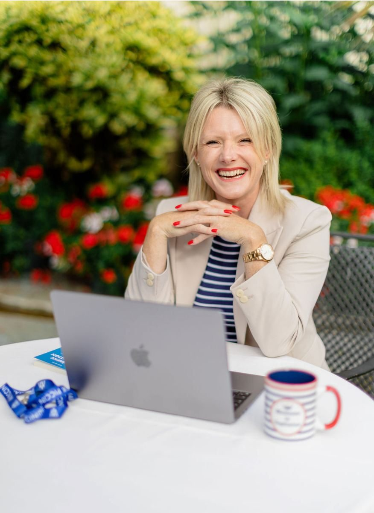
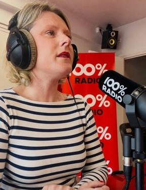

Six mois pour comprendre vos réactions, transformer votre posture de dirigeant et faire grandir votre entreprise sereinement.
Appel découverte de 30 min · offert · sans engagement
Comment il m'a connue, ce qui le bloquait, et ce qui a changé pour lui.
Vous rassurez vos clients, vous portez votre équipe, vous tranchez. Mais quand une situation réveille la peur, la colère ou le besoin de contrôle, vous n'avez personne avec qui prendre du recul.
Quelqu'un qui voit vos angles morts et vous dit les choses avec justesse, sans complaisance.
Ce que vous ne pouvez dire ni à votre équipe, ni à vos clients, ni toujours à votre famille.
Pas seulement une fois par mois. Au moment où la décision, le conflit ou la prise de parole arrive.
Un coach vous voit deux fois par mois. Un bras droit est là quand vous en avez besoin.
Tout est construit autour de votre situation, de votre entreprise et de vos objectifs.
1 h 30 en visio, pour travailler en profondeur sur vos émotions, vos réactions, votre posture et la croissance de votre entreprise.
Entre les séances, vous m'écrivez ou vous m'appelez quand une situation se présente : une décision à prendre, un conflit, une prise de parole à préparer.
Une ou deux journées en face à face sur les 6 mois, chez vous ou chez moi, pour accélérer et ancrer le travail.
Un support personnel pour identifier vos blessures, vos schémas et ce qui se rejoue dans votre façon de diriger.
Pour reconnaître vos mécanismes, et ceux de vos équipes, au moment où ils se déclenchent.
Pour gagner en vision et en clarté : vos priorités, vos objectifs et les décisions qui font réellement avancer votre entreprise.
On identifie ce qui est cristallisé en vous et ce qui se déclenche sous pression. Vous comprenez enfin d'où viennent vos réactions.
Vous passez d'une posture réactionnelle à une posture stable et claire. Vos décisions changent, votre management aussi.
Vous osez prendre la parole, vous montrer et incarner votre entreprise, sans vous trahir.
Votre nouvelle posture s'ancre dans votre quotidien. Vous devenez le leader que votre équipe a envie de suivre, et votre entreprise grandit sur des bases solides.

Depuis plusieurs années, j'accompagne des dirigeants, des entrepreneurs et des cadres, et je forme leurs équipes. Je sais ce que représente le fait de tout porter.
Formée à l'accompagnement psycho-émotionnel et au coaching, et en formation continue, je travaille à la fois sur ce qui se joue en vous et sur ce que ça produit dans votre entreprise.
Entrepreneure, mère d'une famille nombreuse et mariée depuis plus de douze ans, j'ai appliqué sur moi ce que je transmets. C'est ce qui me permet d'avoir aujourd'hui une vie de famille et de couple épanouie.
Un bras droit n'est pas là pour vous sauver. Avec beaucoup de bienveillance, je vous dis ce que je vois, avec justesse et franc-parler, pour que vous avanciez vraiment.
Cheffe d'entreprise en Occitanie depuis près de 15 ans, Aurélie m'a accompagnée en 2025 et j'ai choisi de renouveler l'accompagnement, car diriger en 2026 ne ressemble plus à ce que je faisais il y a dix ans. Son accompagnement m'a aidée à rééquilibrer ma posture et mon positionnement de dirigeante, à piloter mes équipes autrement et à continuer de monter en compétences dans un contexte exigeant. Aujourd'hui, elle accompagne aussi mes salariés. Structurée, exigeante et très humaine. Je recommande vivement.
Cette année d'accompagnement a marqué un vrai tournant pour moi. Pour reprendre la main sur mon activité, il me fallait reprendre la main sur ma posture. En un an, j'ai triplé mon chiffre d'affaires.
Cet accompagnement demande un engagement réel, en temps, en énergie et en argent. C'est ce qui le rend efficace.
Le tarif vous est communiqué lors de l'appel découverte, une fois que nous avons vérifié ensemble que l'accompagnement correspond à votre situation.
Vous souhaitez former vos équipes ? Les formations en entreprise (argumentaire de vente, visibilité, posture de croissance) font l'objet d'un devis sur mesure.
Réserver un appel découverteOui. Les séances se font en visio et j'accompagne des dirigeants partout dans le monde. Pour les journées en présentiel, je me déplace où que vous soyez, en France comme à l'étranger, ou vous venez dans ma région.
Deux séances d'1 h 30 par mois, plus le temps que vous choisissez de consacrer aux outils entre les séances. L'accompagnement s'adapte à un agenda de dirigeant.
Non. C'est un accompagnement psycho-émotionnel et un coaching business, relié en permanence à votre entreprise. Il ne remplace pas un suivi médical ou psychologique.
L'accompagnement est renouvelable. Nous faisons le point ensemble sur le chemin parcouru et sur ce dont vous avez besoin pour la suite.
Oui. Tout ce qui est échangé pendant l'accompagnement reste strictement confidentiel.
C'est précisément le rôle de l'appel découverte. Nous faisons le point sur votre situation et nous voyons ensemble si cet accompagnement est fait pour vous.

Un premier échange pour faire le point sur votre situation et voir si cet accompagnement est fait pour vous.
Réserver un appel découverteAppel découverte de 30 min · offert · sans engagement
Ou par téléphone : 06 49 67 39 17 · sur WhatsApp